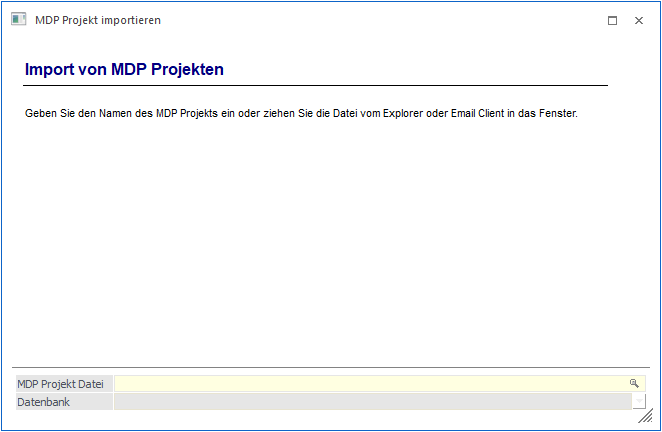
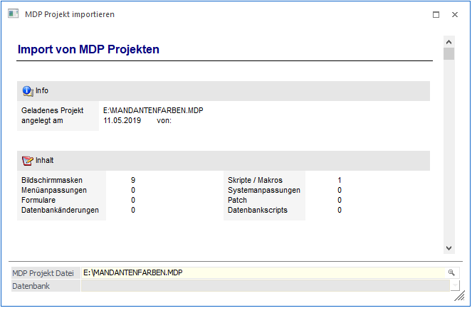
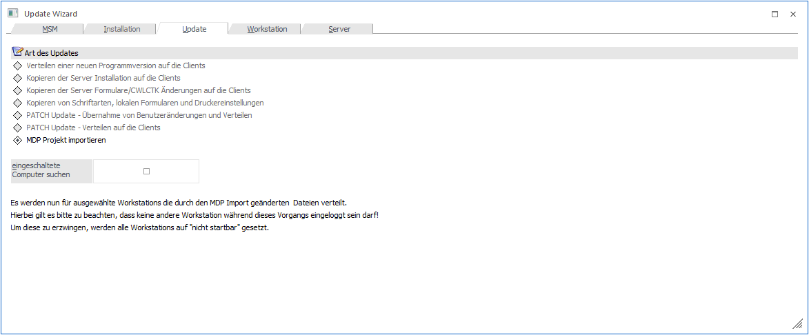
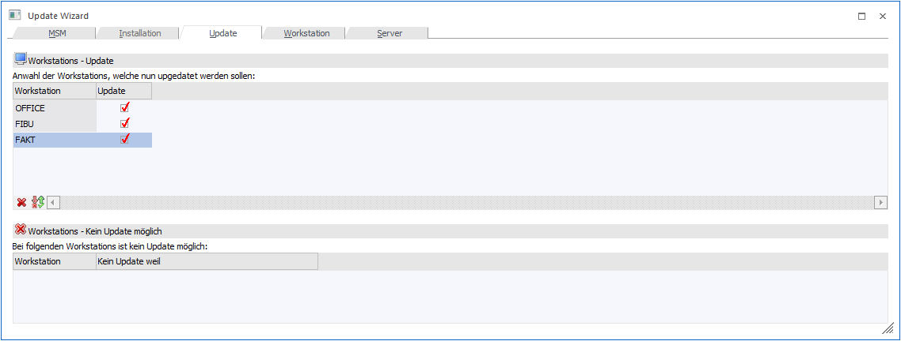
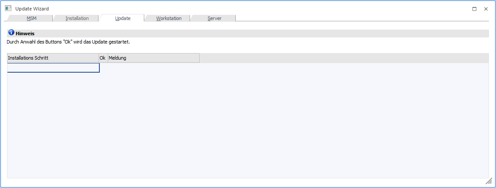
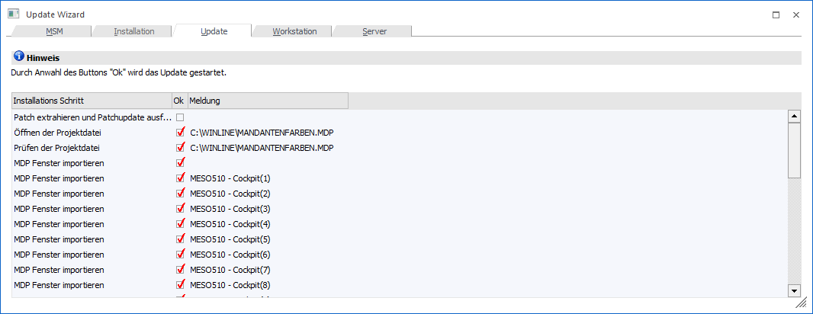
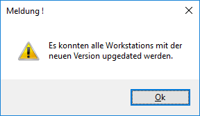
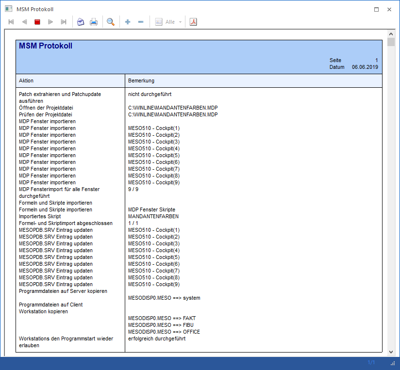

Im Menüpunkt…
1 MSM
1 MDP Projekt importieren
… können MDP Projekte, das sind Dateien die angepasste Formulare, Fenster und Scripte beinhalten können, importiert werden. Dabei wird man in einer Art Wizard durch die einzelnen Schritte geführt.
Im ersten Schritt - nach der Anwahl des Menüpunktes - muss die Datei angegeben werden, die importiert werden soll.

Ø MDP Projekt Datei:
In diesem Eingabefeld kann der Dateiname eingegeben werden. Über den Matchcode kann eine Datei gesucht werden. Weiters besteht die Möglichkeit, die gewünschte Datei direkt mittels Drag & Drop aus dem Explorer oder Email-Client in das Fenster zu ziehen.
Beispiele
ü für Formulare:
Besitzt der
Händler und der Kunde eine volle Lizenz für den Formular-Editor kann der Händler
Formulare bei sich anpassen, diese in ein MDP Projekt stellen und dieses Projekt
dann an den Kunden schicken. Der Kunde kann dieses Projekt im ADMN einlesen.
ü für MDP Partner:
Wenn der
Partner ein MDP Projekt (angepasste Fenster und Menüs) erzeugt, kann er alle
dafür notwendigen Dateien in eine MDP Datei stecken. Dazu gehören (neben den
Formularen - siehe Punkt1) angepasste Fenster, angepasste Menüs und Scripte. Wie
bei den Formularen kann der Kunde dann diese Datei im ADMN einlesen.

Wurde das Projekt eingelesen, wird im Fenster der Inhalt des Projekts dargestellt (in diesem Beispiel sind es eine Maskenänderung, eine Menüanpassung, ein geändertes Formular und ein Script).
Durch Bestätigung mit der OK-Taste wird der Update Wizard geöffnet um die neu angepassten Formulare auf die Clients zu kopieren. Der Radiobutton ist automatisch auf "MDP Projekt importieren" gestellt (die restl. Einträge sind dabei nicht anwählbar).

Über den VOR-Button gelangen Sie in den nächsten Schritt des Assistenten. Hier wird der Status der Umstellung der Workstations angezeigt, wobei Workstations von der Umstellung noch manuell ausgenommen werden können.

Durch Anklicken des VOR-Buttons gelangt man in den nächsten Schritt, wo dann das Update durch Drücken der F5-Taste gestartet wird.

In diesem Fenster wird der Fortschritt des Updates angezeigt.

Zusätzlich dazu wird noch ein Protokoll am Bildschirm ausgegeben, wo ebenfalls die einzelnen durchgeführten Aktionen aufgelistet werden.
Die erfolgreiche Umstellung wird durch eine Meldung bestätigt,

und es wird ein MSM Protokoll (auch als Spooldatei: z.B. "MSM Update Wizard Log(Uhrzeit).spl") erstellt.

Über den Ende-Button wird der Import des Projektes abgeschlossen.